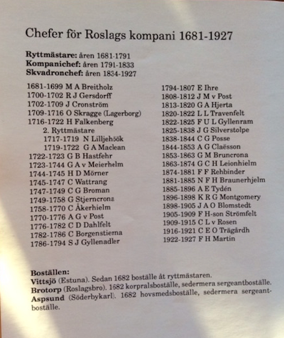

Hovslagarboställe/Sergeantboställe
Från 1682 och i drygt 200 år tillhörde den första gården på byvägen Roslags kompani, livregementet till häst och
användes som boställe åt kompaniets hovslagare eller sergeant. Det var då detta kompani grundades.
Gården såldes sedan strax före sekelskiftet och har sedan dess varit i privat ägo. Den ganska långa traditionen av att
ha varit boställe åt kavallerister föll i stora delar i glömska även om vi har hört om det och även sett en artikel i
Norrtälje Tidning för många år sedan.
Huset som nu står på platsen tror vi däremot är ca 200 år efter att ha läst om husets skick och rumsfördelning i laga skiftet 1837.
Troligen har det däremot stått ett tidigare hus på samma plats eller egentligen flera då byn har funnits sedan medeltid.
....
.....
.....
